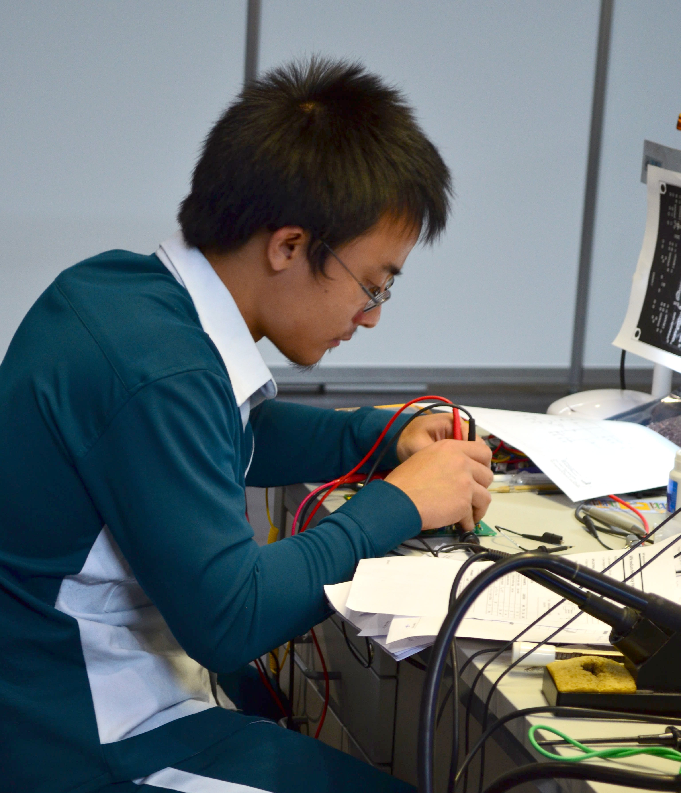

Founder & Lead Electrician
Qualified electrician with years of residential and commercial experience.
Getting to know the team behind your safe and compliant electrical work.
SparkRight Electrical Services was founded in 2021 by a qualified electrician based in Johannesburg. What started as small residential call-outs has grown, through word-of-mouth referrals, into a trusted electrical contracting service completing wiring, fault-finding and Certificate of Compliance (CoC) work for homeowners and small businesses across Gauteng.
To provide safe, reliable and affordably priced electrical work to every client, every time.
To become the most trusted electrician in the local area within three years.

Qualified electrician with years of residential and commercial experience.

Supports installations, fault-finding and CoC inspections on every job.